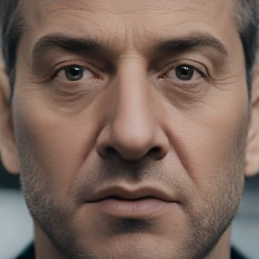
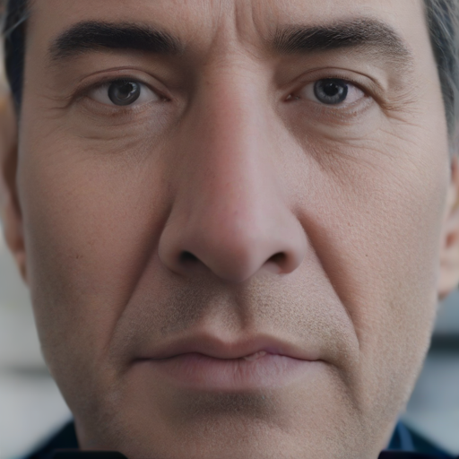

Demo Samples
1. Voice-to-Face Synthesis
| Speech Utternace | Generated Face | Speech Utternace | Generated Face |
|---|---|---|---|

|
|||
2. Face-to-Voice Synthesis
Text: However, he held out little hope that the Government would take action.
| Face | FACE-TTS | Grad-StyleSpeech | Face-StyleSpeech | Generated Voice by SD-EVG |
|---|---|---|---|---|

|
Text: It's great, because it takes a lot of pressure off the players.
| Face | FACE-TTS | Grad-StyleSpeech | Face-StyleSpeech | Generated Voice by SD-EVG |
|---|---|---|---|---|
Text: They made clear that they are not interested in Government assistance.
| Face | FACE-TTS | Grad-StyleSpeech | Face-StyleSpeech | Generated Voice by SD-EVG |
|---|---|---|---|---|
Text: We have always maintained that we would never abandon Scottish football.
| Face | FACE-TTS | Grad-StyleSpeech | Face-StyleSpeech | Generated Voice by SD-EVG |
|---|---|---|---|---|
Text: We must provide a long-term solution to tackle this attitude.
| Face | FACE-TTS | Grad-StyleSpeech | Face-StyleSpeech | Generated Voice by SD-EVG |
|---|---|---|---|---|
Text: Throughout the centuries people have explained the rainbow in various ways.
| Face | FACE-TTS | Grad-StyleSpeech | Face-StyleSpeech | Generated Voice by SD-EVG |
|---|---|---|---|---|
3. Emotional Speech Synthesis
Emotion: Happy
| Generated Face | Generated Speech Utternace |
|---|---|
|
Text: We've surpassed every goal set before us! |
Emotion: Sad
| Generated Face | Generated Speech Utternace |
|---|---|
|
Text: Their absence is a shadow over our hearts. |
Emotion: Angry
| Generated Face | Generated Speech Utternace |
|---|---|
|  |
Text: Such blatant disregard for ethics cannot go unchecked! |
Emotion: Surprise
| Generated Face | Generated Speech Utternace |
|---|---|
|
Text: The findings defy all prior assumptions we've held! |
Emotion: Neutral
| Generated Face | Generated Speech Utternace |
|---|---|
|  |
Text: The evidence leads us to a different conclusion than expected. |